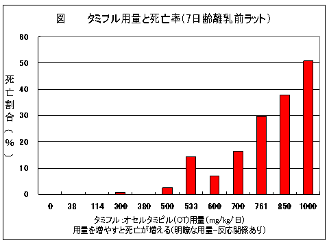

６月１６日に厚生労働省薬事・食品衛生審議会の安全対策調査会が開催され、タミフルの害について審議されました。
これに先立ち、NPO法人医薬ビジランスセンター（薬のチェック）として厚生労働大臣あてに要望書を提出しました。
今回の要望書で初めて触れた点がいくつかあります。
−突然死との因果関係がさらに明らかになりましたー
これまでの離乳前ラットのデータにメーカーが公開を拒否したままの多数の動物実験を合わせると、タミフルをたくさん投与すればするほど赤ちゃんラットの死亡（大部分は突然死）が増加している様子が一目瞭然です(図)。これを用量-反応関係があるといい、タミフルを投与しなければ、赤ちゃんラットは全く死亡していないので、死亡はタミフルによること、つまり因果関係が明らかです。
これだけ、因果関係の明瞭な死亡が生じているのに、どうして突然死との因果関係が認められないのでしょうか。メーカーはどうして公開を拒否しているのでしょうか。
次に新たな点は、新生児死亡が最低用量でも5倍近く多くなり、これも量を増やすほど増加していた点です（速報119号および120号で報告済みですが、要望書でははじめて）。これも明瞭な因果関係があります。
−低体温の後、突然意識消失し死亡−
はじめて予防的に用いたタミフルで74歳の女性が死亡されました。ハイリスクほど危険であること、ハイリスクでない人は自然治癒するためタミフルは不要であることを、あらためて強調しました。
これらの点に特に注目してお読みください。